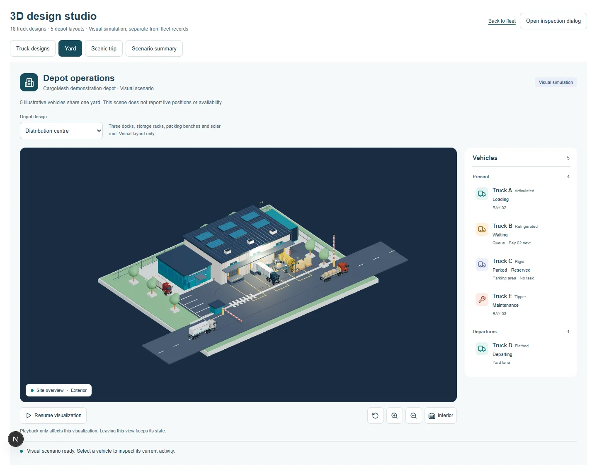
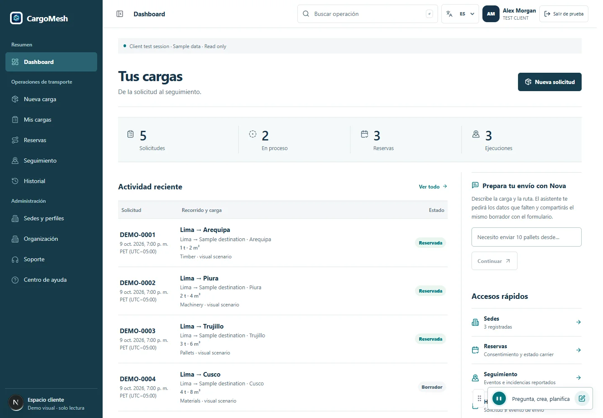

CargoMesh 2
Desarrollamos en equipo CargoMesh 2 para la hackatón internacional de Amazon: coordinación logística con portales Cliente y Carrier, Nova, mapas y visualización 3D.

El proyecto
- Portales Cliente y Carrier para solicitudes, ofertas, reservas y vistas de seguimiento.
- Backend compartido, autenticación y acceso a datos por organización.
- Asistente Nova, mapas de carretera e integración MCP autenticada.
- 23 diseños visuales de camiones y 15 arquitecturas de sedes, con escenarios logísticos 3D.
- Proyecto de equipo para Build, Ship, Shape: Amazon Developer Hackathon 2026.
Aprendizaje
- Construir un producto en equipo, integrando interfaz, servicios, datos e inteligencia artificial.
- Coordinar contratos, permisos y validaciones entre módulos y portales.
- Entregar incrementos mediante ramas, PR, pruebas y evidencia reproducible.
Desarrollo en equipo
- Evolución de CargoMesh desde su primera versión hacia una plataforma con múltiples transportistas.
- Desarrollo e integración de portales, servicios comerciales, persistencia, mapas y asistencia conversacional.
- Catálogos 3D compartidos, escenarios de cinco camiones y continuidad de estado entre vistas.
- Revisión de flujos, responsive, estados de recuperación y documentación de cada entrega.
Comprobación
Se comprobaron el repositorio público, las entregas #92, #128, #154 y #164 y los catálogos de 23 diseños de camiones y 15 sedes en la copia documentada. Los PR #154 y #164 están integrados en main; los otros corresponden a bases históricas. Las capturas son de escenarios de muestra. Los resultados de pruebas de los informes pertenecen a sus respectivas entregas; no se ejecutó una nueva batería de CargoMesh para esta ficha.
Hackatón internacional de Amazon
CargoMesh 2 se desarrolló en grupo para Build, Ship, Shape: Amazon Developer Hackathon 2026. La convocatoria global de Amazon Developer reunió Fire TV, Alexa+, Ring y Bee; la documentación del equipo identifica Alexa+ como línea principal, junto con trabajo relacionado con AWS Builder y Open Source.
Esta segunda etapa amplía la primera versión de CargoMesh, presentada a The WebMCP Challenge de OpenAI. Incorpora coordinación comercial persistente, múltiples transportistas, asistencia Nova, mapas y exploración 3D. Se presentan como dos experiencias de hackatón dentro de la evolución del mismo producto.
La convocatoria admitió entregas entre el 31 de agosto y el 23 de octubre de 2026. El calendario oficial prevé anunciar ganadores el 3 de diciembre; aquí se acredita la participación y el desarrollo del equipo, sin atribuir un resultado final.
El problema que buscamos resolver
Organizar un transporte exige conectar información que suele estar dispersa: características de la carga, recogida y entrega, equipos, disponibilidad, propuestas y decisiones de contratación. Creamos CargoMesh en grupo para reunir ese proceso en una experiencia compartida entre clientes y empresas transportistas.
La plataforma busca que una solicitud sea comprensible, que las alternativas tengan condiciones explícitas y que cada organización conserve el control sobre sus datos y decisiones. El proyecto forma parte de Build, Ship, Shape: Amazon Developer Hackathon 2026.
De la solicitud a la operación
El espacio Cliente reúne la preparación de carga, solicitudes, ofertas, reservas, sedes e historial. El espacio Carrier incorpora oportunidades, propuestas, políticas de cotización, pedidos, flota, conductores y control operativo.
Nova acompaña la captura y revisión de información mediante conversación. Los contratos del producto separan la preparación de un borrador, la búsqueda de alternativas y la confirmación comercial: una sugerencia del asistente no sustituye la autorización de las personas. Estos contratos expresan el flujo del producto; no certifican que todas sus transiciones hayan sido aceptadas con datos reales en producción.
Una arquitectura que conecta las piezas
Lenguajes y base web: TypeScript, JavaScript, Python y SQL, junto con HTML5 y CSS3 para la estructura y presentación.
Frontend: Next.js, React, CSS Modules y Tailwind CSS. Three.js y React Three Fiber permiten explorar vehículos e instalaciones; Google Maps Platform y Leaflet presentan mapas y recorridos.
Backend y datos: Node.js y Hono exponen servicios REST, Zod define contratos compartidos, y Supabase Auth, PostgreSQL y RLS aportan identidad, persistencia y separación de datos por organización.
IA e integración: el gateway de voz utiliza Python, WebSocket, Strands y Amazon Bedrock Nova. La integración MCP autenticada reutiliza los servicios de aplicación y sus controles de acceso.
Infraestructura y entrega: Docker, servicios de AWS, Vercel y GitHub Actions. Son tecnologías del desarrollo conjunto; la plataforma reúne el trabajo del equipo en sus distintos módulos.
Logística que también se puede explorar
El catálogo reúne 23 diseños visuales de camiones y 15 arquitecturas de sedes. Un escenario de cinco camiones representa carga, espera, salida y mantenimiento. La selección, el reloj y la cámara se conservan al cambiar de vista, y la compatibilidad entre carrocería y modelo evita representaciones incoherentes.
Son recursos para explicar y explorar operaciones. Una animación no acredita tracking GPS, una arquitectura no crea una sede empresarial y un diseño de camión no registra un activo disponible.
Construir y aprender en grupo
Trabajamos con ramas, revisiones y PR para integrar incrementos de la plataforma. Los informes conservan código, capturas, pruebas y límites de cada entrega. El reto ha sido conectar módulos que evolucionan en paralelo sin perder coherencia entre interfaz, reglas, permisos y datos.
El aprendizaje abarca desarrollo web, integración de servicios, inteligencia artificial, bases de datos, visualización 3D y colaboración técnica. No se presentan métricas de negocio, premios, certificaciones ni una validación completa de producción que no estén acreditados.


Fuentes y entregas
Alcance de esta versión
CargoMesh 2 es la evolución desarrollada en grupo para Build, Ship, Shape: Amazon Developer Hackathon 2026. Esta presentación describe el producto completo y reconoce el trabajo compartido. Las escenas 3D son referencias visuales, no GPS ni flota real. La experiencia web con Nova y MCP no acredita una integración Alexa+ en un dispositivo Echo.
Participación de 2026. Convocatoria: 31 de agosto–23 de octubre. El calendario oficial sitúa el anuncio de ganadores el 3 de diciembre de 2026. Al preparar esta ficha, el 25 de octubre, no se acredita un premio ni una clasificación final de CargoMesh 2.